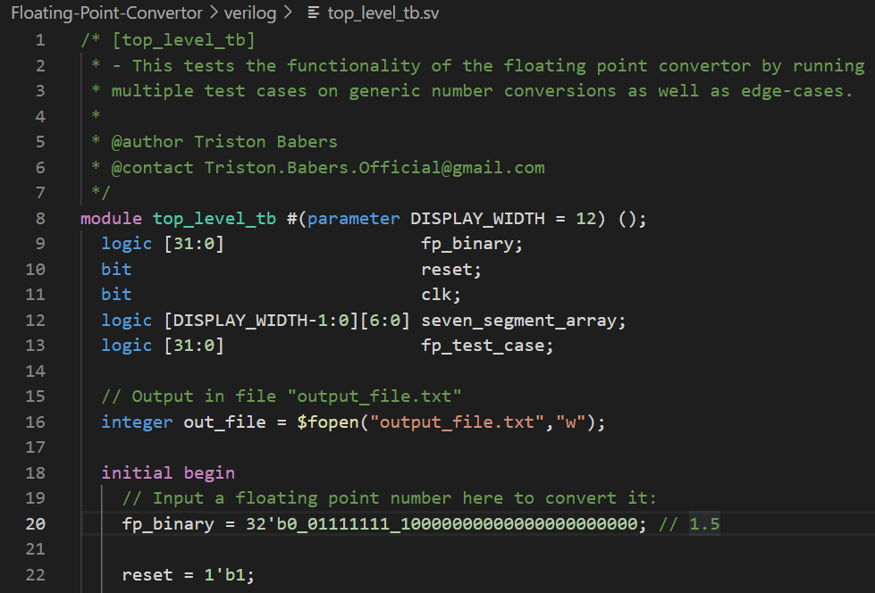
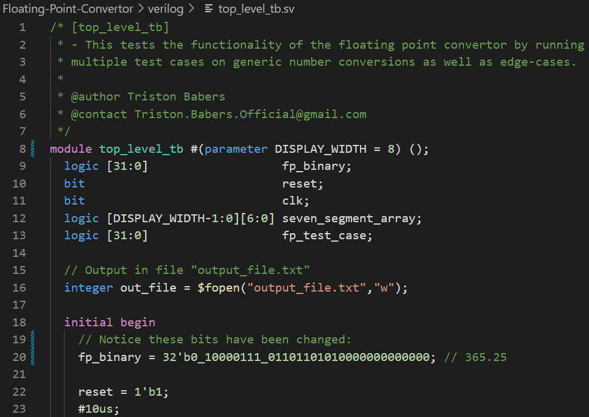
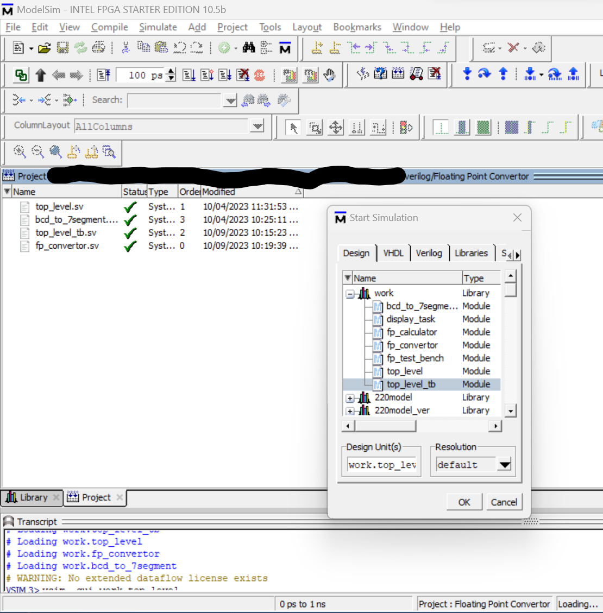
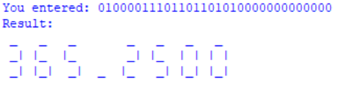

Floating-Point Convertor

Using a hardware design made with System Verilog to convert a 32-bit float-value into a decimal representation of 5+ digits.
How to Use:
- First, open the top_level_tb.sv file, and find lines 8 and 21: 
- You can change the amount of DISPLAY_WIDTH, and the binary floating point number for the module to convert like so: 
- Then build the project in ModelSim, use top_level_tb as the design. 
- Finally, run the simulation. It will create an output file containing the converted floating point value in the desired number of digits! 
Download:
Get the source files on my GitHub repository at: github.com/TristonBabers/Floating-Point-Convertor.
Specifications:
ModelSim - Intel FPGA Starter Edition 10.5b (Quartus Prime 18.1)
I used this edition of ModelSim in all of my testing. You can find it for free at intel.com!
References:
Radix Conversion Algorithm:
(Textbook) Knuth, Donald E - Art of Computer Programming, Volume 2 Seminumerical Algorithms, Third Edition (p. 319 Method 2a)